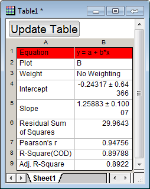
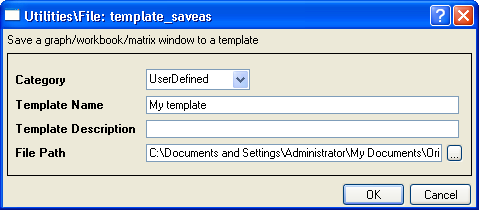
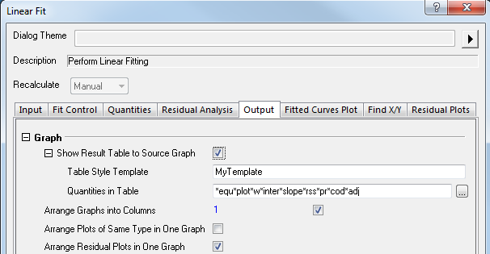
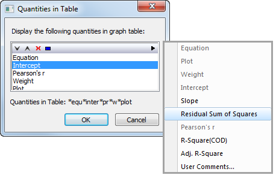
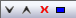
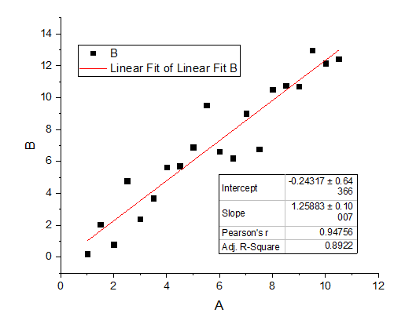
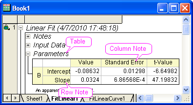
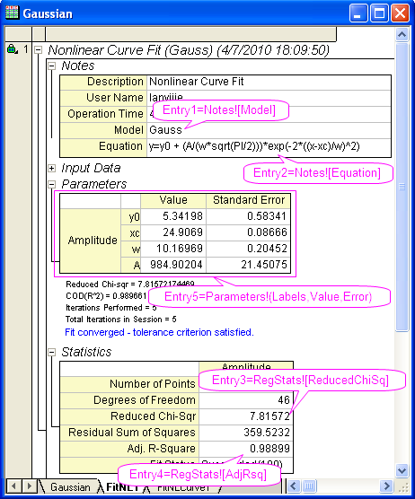
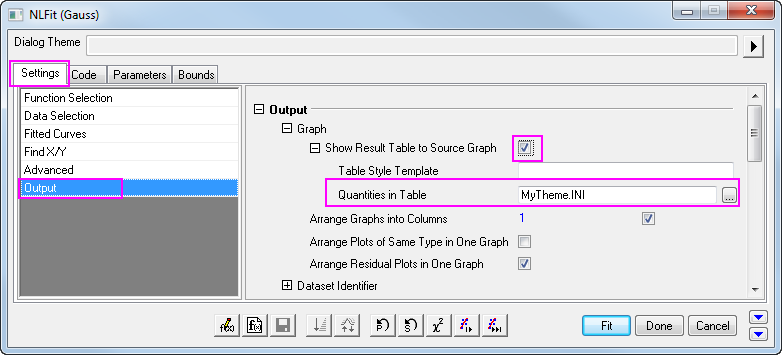

Benutzerdefinierte Vorlage für Tabellenstil und Eigenschaften in Tabelle
FitRef-CustomReportTable
Wenn die Anpassung von einem Diagrammfenster aus durchgeführt wird, können Sie entscheiden, ob die Ergebnistabellen in das Quelldiagramm eingefügt werden und das Tabellenformat benutzerdefiniert angepasst wird, entweder indem eine Arbeitsblattvorlage in Tabellenstilvorlage festgelegt oder der Tabelleninhalt über Dialog oder durch Festlegen einer .INI-Datei in Eigenschaften in Tabelle benutzerdefiniert angepasst wird.
Tabellenstilvorlage
Die Berichtstabelle wird mit einer standardmäßigen Arbeitsmappenvorlage erstellt. Wie beim Bearbeiten eines normalen Arbeitsblatts können Sie den Stil des Arbeitsblatts benutzerdefiniert anpassen, wie z.B. Schriftart, Hintergrundfarbe etc., und dieses Arbeitsblatt als eine Vorlage speichern. Danach legen Sie diese Vorlage im Bearbeitungsfeld Vorlage zum Erstellen von Tabellen fest.
Beispiel:
- Importieren Sie die Datei \Samples\Curve Fitting\Linear Fit.dat, markieren Sie Spalte B und zeichnen Sie ein Punktdiagramm.
- Verwenden Sie bei aktivem Diagramm den Menüpunkt Analyse: Anpassen: Linearer Fit, um den Dialog Lineare Anpassung aufzurufen. Übernehmen Sie die Standardeinstellungen und klicken Sie auf die Schaltfläche OK. Die Ergebnistabelle wird in das Quelldiagramm eingefügt.
- Klicken Sie doppelt auf die Tabelle, um sie in einem Arbeitsblattfenster zu öffnen. Setzen Sie die Hintergrundfarbe der ersten Zeile auf Rot.
- 
- Wählen Sie Datei: Template speichern unter im Origin-Menü. Geben Sie der Vorlage den Namen MyTemplate und speichern Sie sie.
- 
- Gehen Sie zurück zum Arbeitsblatt der Rohdaten. Markieren Sie die Spalte C und erstellen Sie ein Punktdiagramm.
- Rufen Sie bei aktivem Grafikfenster den Dialog Lineare Anpassung wieder auf. Erweitern Sie auf der Registerkarte Ausgabeeinstellungen den Zweig Diagramm: Ergebnistabelle in Quelldiagramm zeigen und geben Sie "MyTemplate" in dem Bearbeitungsfeld Tabellenstilvorlage ein.
- 
- Klicken Sie zum Durchführen der Anpassung auf OK. Sie können sehen, dass die erste Zeile Ihrer Berichtstabelle im Ergebnisdiagramm rot ist. Mit anderen Worten - die benutzerdefinierte Vorlage wurde verwendet, um die Tabelle im Diagramm zu erstellen.

Eigenschaften in Tabelle
Es stehen zwei Methoden zur Verfügung, um die Elemente, die in der Tabelle im Diagramm gezeigt werden, festzulegen:
- Dialog Eigenschaften in Tabelle
- *.ini-Datei bearbeiten Beim Verwenden dieser Methoden geben Sie den .ini-Dateinamen in das Feld Eigenschaften in Tabelle ein.
Dialog Eigenschaften in Tabelle

Dieser Dialog kann durch Klicken auf die Schaltfläche neben Eigenschaften in Tabelle geöffnet werden. Er kann dazu verwendet werden, die Eigenschaften, die in der Diagrammtabelle gezeigt werden, hinzuzufügen oder zu löschen. Dies geschieht über die Liste im Ausklappmenü auf der rechten Seite. Es ermöglicht auch, die Reihenfolge der Eigenschaften zu ändern, Eigenschaften zu löschen oder diese durch Klicken auf die Schaltfläche  auszuwählen. Nachdem Sie auf OK geklickt haben, wird eine Notationszeichenkette im Bearbeitungsfeld erstellt, um auf das Inhaltsverzeichnis zu verweisen. Das folgende Tutorial führt die Schritte zum Erstellen einer linearen Regressionsberichtstabelle im Diagramm ein.
 |
- Öffnen Sie eine neue Arbeitsmappe und importieren Sie die Datei \Samples\Curve Fitting\Linear Fit.dat.
- Klicken Sie auf und markieren Sie die zweite Spalte und wählen Sie den Menüpunkt Zeichnen: Symbol: Punktdiagramm, um ein Punktdiagramm zu erstellen.
- Gehen Sie bei aktiven Diagramm zum Menüpunkt Analyse: Anpassen: Linearer Fit, um den Dialog Lineare Anpassung aufzurufen.
- Deaktivieren Sie auf der Registerkarte Fit-Steuerung das Kontrollkästchen Scheinbarer Fit.
- Erweitern Sie auf der Registerkarte Ausgabe im Dialog den Zweig Diagramm-> Ergebnistabelle im Quelldiagramm zeigen. Klicken Sie auf die Schaltfläche neben Eigenschaften in Tabelle, um den Dialog Eigenschaften in Tabelle zu öffnen. Drücken Sie auf die Strg-Taste und klicken Sie mit der Maustaste, um Gleichung, Zeichnung, Gewichtung, Summe der Fehlerquadrate, R-Quadrat (COD) in der Liste. Klicken Sie zum Entfernen auf
 . Die linken Elemente werden im Diagramm gezeigt. Klicken Sie zum Anwenden auf OK. . Die linken Elemente werden im Diagramm gezeigt. Klicken Sie zum Anwenden auf OK. - Klicken Sie auf OK, um den Dialog Lineare Anpassung zu schließen. Das Ergebnisdiagramm entspricht dem untenstehenden:
- 
|
Benutzerdefinierte Eigenschaften in Tabelle durch Bearbeiten der INI-Datei
Origin verwendet Designs, die als .INI-Dateien im Ordner \CustomTable gespeichert werden, um den Tabelleninhalt festzulegen. Wenn Sie ein neues Design erstellen möchten, sollten Sie eine neue .INI-Datei erstellen, sie im Ordner \CustomTable speichern und dann im Bearbeitungsfeld Eigenschaften in Tabelle festlegen.
Wie auf einen Berichtsbaumwert verwiesen wird
Der Inhalt der Tabellen besteht lediglich aus Verknüpfungen zum Berichtsarbeitsblatt, und die Berichtsarbeitsblätter werden in einer Baumstruktur organisiert, so dass Sie die nur Baumknoten in der .INI-Datei festlegen können durch:
- Tabellenname!SpalteKnotenname[ZeileKnotenName]
- 
Die folgende Kurvensteigung kann beispielsweise geschrieben werden als:
- Parameters!Value[Slope]
Beachten Sie, dass die Knotennamen sich etwas von dem unterscheiden, was Sie im Berichtsblatt sehen können. Bitte nehmen Sie die folgenden Knotenelementnamen zu Hilfe.
Knotenelementnamen
Notizentabelle (Notizen)
| Spalte/Zeile |
Elementname |
|
Beschreibung Anwendername Betriebszeit Model Equation Statusbericht
|
Beschreibung UserName Time Model Equation AutoUpdateMode
|
Eingabedatentabelle (Input)
| Spalte/Zeile |
Elementname |
|
Spalten Zeilen
|
Cn Rn
|
(Wobei n die n-te Spalte / Zeile ist)
Parametertabelle (Parameter)
| Spalte/Zeile |
Elementname |
|
Wert Fest Standardfehler t-Wert Wahrsch.>|t| LCL UCL Dependency KI halbe Breite Untere Schranke Obere Schranke
|
Wert Fix Error tValue Prob LCL UCL Dependency ConfInterval LowerBound UpperBound
|
Statistiktabelle (RegStats)
| Spalte/Zeile |
Elementname |
|
Anzahl der Punkte Freiheitsgrade Chi-Quadrateduziert Summe der Fehlerquadrate R-Wert R-Quadrat (COD) Kor. R-Quadrat Wurzel-MSE (StAbw) Anzahl der Iterationen Fit-Status
|
N DOF ReducedChiSq SSR Rvalue RSqCOD AdjRSq RMSESD NumIter FitStatus
|
Zusammenfassungstabelle (Summary
ANOVA-Tabelle (ANOVAs)
| Spalte/Zeile |
Elementname |
|
DF Summe der Quadrate Mittelwert der Quadrate F -Wert Wahrsch.>F Regression Residuum Unkorrigierte Gesamtsumme Korrigierte Gesamtsumme
|
DOF SSq MeanSq FValue PValue RegressionN ResidualN UCTotalN CTotalN
|
(Hinweis: N bedeutet die n-te ANOVA-Tabelle)
.INI-Datei erzeugen
- Die Designtabellen sind aufgebaut wie .INI-Standarddateien: Es gibt Abschnitte, die mit der Zeile
- [SectionName]
- beginnen, gefolgt von dem Eintragspaar
- name=value
- . Zurzeit wird nur ein Abschnitt (section) mit dem Namen [DataLinks] unterstützt. Die Zeilen, die mit Semikolon ";" beginnen, sind Kommentarzeilen.
- Alle Einträge sollten Namen haben, die mit dem Präfix "Entry" beginnen, gefolgt von einer Zahl. Die Zahlen werden verwendet, um die Einträge in dem Design vertikal zu ordnen. Beachten Sie, dass ein Eintrag, wenn das Design auf eine benutzerdefinierte Tabelle angewendet wird, mehr als eine Zeile ergeben kann. Wenn es beispielsweise zwei Einträge gibt, Entry1 und Entry2, und Entry1 hat 3 Zeilen in der benutzerdefinierten Tabelle erstellt, dann wird Entry2 in der benutzerdefinierten Tabelle angezeigt, beginnend mit Zeile 4.
- Jeder Eintragswert kann aus 0 oder mehr Elementen bestehen, getrennt aus Leerzeichen. Die Elemente werden von links nach rechts angezeigt (d.h. in aufeinander folgenden Spalten), wenn das Design auf eine benutzerdefinierte Tabelle angewendet wird. Wenn ein Eintrag leer ist (d.h., es hat 0 Elemente), ergibt sich eine leere Zeile, wenn das Design angewendet wird.
- Jedes Element kann aus mehreren Teilen bestehen. Die Teile können entweder die Knotennamen eines Berichtsbaums sein, die sich auf einige andere Tabellen beziehen, wobei sie dann Verknüpfungen zu anderen Tabellen herstellen, oder sie können buchstäbliche Verknüpfungen sein, die sich als solche in Zellen befinden, wenn das Design angewendet wird. Leerzeichen zwischen den Elementen sollten in Anführungszeichen stehen.
- Ist ein Element eine Verknüpfung, wird er normalerweise folgendermaßen dargestellt:
- Tabellenname!SpalteKnotenname[ZeileKnotenName]
- Jedes Verknüpfungselement beginnt mit dem Namen eines Knotens in dem Berichtsbaum, der eine Tabelle darstellt. ZeileKnotenName stellt den Namen eines Knotens dar, der eine Zeile in der TabelleTabellenname erstellt (dass eine Zeile dargestellt wird, wird dadurch gekennzeichnet, dass der Knotenname in eckigen Klammern steht). SpalteKnotenName stellt den Namen eines Spaltenknotens in der Tabelle Tabellenname dar. Die oben stehende Verknüpfung stellt, wenn sie als ein Design auf eine benutzerdefinierte Tabelle angewendet wird, die Verknüpfung zu einer Zelle her: Die Zelle befindet sich in der Tabelle Tabellenname in der Zeile ZeileKnotenName und in der Spalte SpalteKnotenName. Zum Beispiel:
- Parameters!Value[P1]
- ist eine Verknüpfung zu dem Wert des ersten Parameters in der Tabelle Parameter.
- Es können mehrere Spaltenknoten der gleichen Tabelle in einer Verknüpfung kombiniert werden. Zum Beispiel:
- Parameters!(Value,Error)[P1]
- stellt zwei Zellen nebeneinander her: die Verknüpfungen zu den Wert- und Fehlerzellen des ersten Parameters in der Tabelle Parameter.
- Wenn ein Zeilen- oder ein Spaltenknotenname ausgelassen wird, ist das Ergebnis eine Verknüpfung zu der "gesamten" anderen Dimension. Zum Beispiel:
- Parameters!Value
- stellt die Verknüpfung zu der gesamten Wertspalte her und
- Parameters![P1]
- stellt eine Verknüpfung zu der gesamten Zeile des ersten Parameters in der Tabelle Parameter her.
- Wenn beide Namen von Zeilen- und Spaltenknoten ausgelassen werden und nur der Tabellenknotenname (gefolgt von '!') vorhanden ist, besteht das Ergebnis aus einer Verknüpfung zur gesamten Tabelle. Wie zum Beispiel:
- Parameters!
- ist eine Verknüpfung zu der gesamten Tabelle Parameter.
- Es gibt ein spezielles Schlüsselwort -- Beschriftungen. Es wird dazu verwendet, darauf hinzuweisen, dass in einer gegebenen Dimension die Verknüpfung zu Beschriftungen hergestellt werden sollte. Zum Beispiel:
- RegStats![Labels]
- erstellt die Spaltenbeschriftungen der Tabelle RegStats. Und
- Parameters!Labels[P1]
Beispiel
Öffnen Sie die Datei \CustomTable\FitNL.INI mit Notepad. Sie können sehen, dass das Design für die Standardausgabetabelle nichtlinearer Kurvenanpassungen folgendermaßen aussieht (gültige Zeilen):
- [DataLinks]
- Entry1=Notes![Model]
Entry2=Notes![Equation]
Entry3=RegStats![ReducedChiSq]
Entry4=RegStats![AdjRsq]
Entry5=Parameters!(Labels,Value,Error)
die die folgenden Tabellen im Berichtsarbeitsblatt darstellen:
- 
Um den p-Wert in der ANOVA-Tabelle in die Diagrammtabelle einzuschließen, modifizieren Sie die Datei nur folgendermaßen:
- [DataLinks]
- Entry1=Notes![Equation]
Entry2=RegStats![AdjRsq]
Entry3="Model P Value" ANOVAs!PValue[Regression1]
Entry4=Parameters!(Labels,Value,Error)
Erstellen Sie einen Ordner mit dem Namen BenutzdefinierteTabelle in Ihrem Anwenderdateiordner. Origin verwendet zuerst die Einstellungen (.INI-Datei) in Ihrem Anwenderdateiordner. Speichern Sie dann die .INI-Datei, z.B. unter MyTheme.INI in dem neu erstellten Ordner BenutzerdefinierteTabelle. Um dieses Design zu verwenden, legen Sie die Datei (vollständiger Name) im Bearbeitungsfeld Ausgabe: Einstellungen: Ergebnistabellen in Quelldiagramm zeigen: Eigenschaften in Tabelle fest.
- 